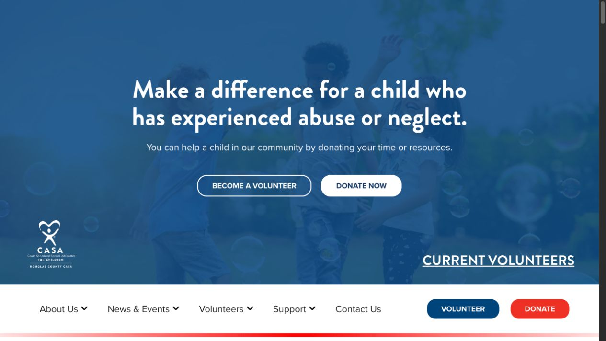
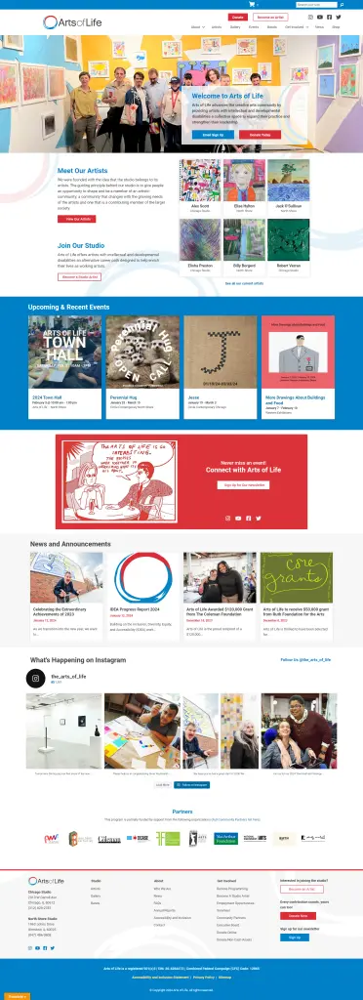
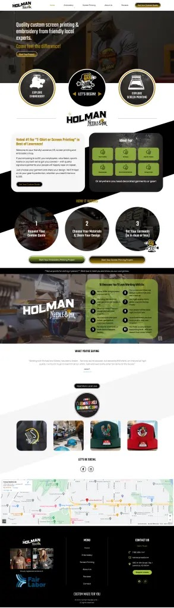
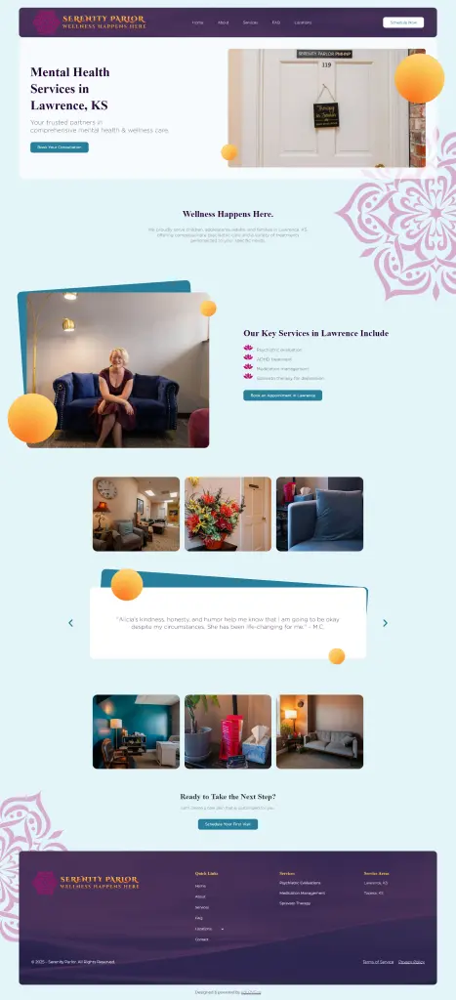

01
Mr. Exchange
Primarily front-end development with TypeScript, on a platform using Scala.
I’m Viczen, a web and software developer in the Philippines. I build websites and software that turn ideas into practical tools people can use.
Explore my work01 / SELECTED WORK
A few projects from my portfolio.
Different ideas. The same care.
Primarily front-end development with TypeScript, on a platform using Scala.

An interactive propeller finder built with jQuery DataTables.

A custom WordPress website, translating a Figma design into working pages.

A custom WordPress website supporting artists with disabilities and their creative work.

A WordPress website for a screen printing and embroidery business, built with Elementor.

A WordPress website built from a Figma design using Elementor.
Real website screenshots. Select a project image to visit the site.
Connect with me on LinkedIn02 / THE PERSON BEHIND THE CODE
The best part of building software? Seeing it become useful to someone.
That’s what keeps me motivated. I enjoy the challenge of custom development and the satisfaction of delivering work that makes a difference.
I’m a web and software developer based in the Philippines, with a Bachelor of Science in Information Technology. My background spans front-end and back-end development, database design, and API integrations.
I use AI in my development workflow to build custom sites, plugins, and website features. My work includes custom post type filtering for home plans.
Away from the screen, I recharge with films, trips into the wilderness, and volleyball. I’m always learning, whether it’s a new tech stack or financial literacy.
03 / WHAT I WORK WITH
HTML · CSS · JavaScript · TypeScript · Vue.js · Bootstrap · jQuery · Sass
PHP · MySQL · PostgreSQL · SQLite · Database design · RESTful APIs
WordPress · Custom plugins · Theme development · Elementor · WooCommerce
Custom sites built with AI · Custom plugins and features · Custom post type filtering for home plans
Make · Zapier · Workflow automation · API integrations
Site speed optimization · Image optimization · API integrations · Google Tag Manager
HAVE SOMETHING IN MIND?
Have a project in mind? Send me an email, give me a call, or connect on LinkedIn.
Let’s talk about your project